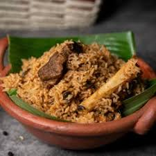

Mutton Biriyani:

Serves: 4
Ingredients:
- 500g mutton
- 2 cups basmati rice
- 2 onions (sliced)
- 1 tomato (chopped)
- 1/2 cup curd
- 2 tbsp ginger-garlic paste
- 1/4 cup chopped mint & coriander
- 2 tsp biryani masala
- Whole spices (bay leaf, cinnamon, cloves, cardamom)
- Salt, ghee/oil
Steps:
- Marinate mutton with curd, ginger-garlic paste, salt, and masala for 1 hr.
- Parboil rice with whole spices and salt. Drain.
- Fry onions till golden. Add tomato, mint, coriander, and marinated mutton. Cook till soft.
- Layer half rice, some mint/coriander, then rest of rice. Drizzle ghee.
- Cover and cook on low heat for 20–25 mins.
- Fluff and serve hot.